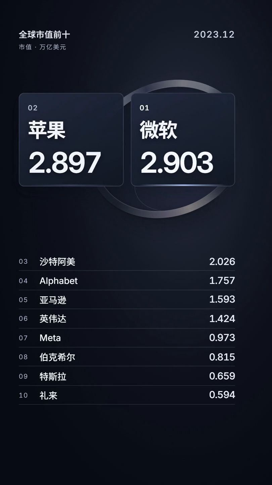

全球市值前十
竖屏榜单跟踪 2000 年 3 月至 2026 年 11 月的市值排名。看苹果先独占主位，接着与微软各占一个卡位，最后由微软接过榜首舞台。

它由这些组成
想改这里
在 market-history-portrait.tsx 的 <h1> 编辑「全球市值前十」，就能更换榜单左上角的标题。
竖屏榜单跟踪 2000 年 3 月至 2026 年 11 月的市值排名。看苹果先独占主位，接着与微软各占一个卡位，最后由微软接过榜首舞台。

在 market-history-portrait.tsx 的 <h1> 编辑「全球市值前十」，就能更换榜单左上角的标题。